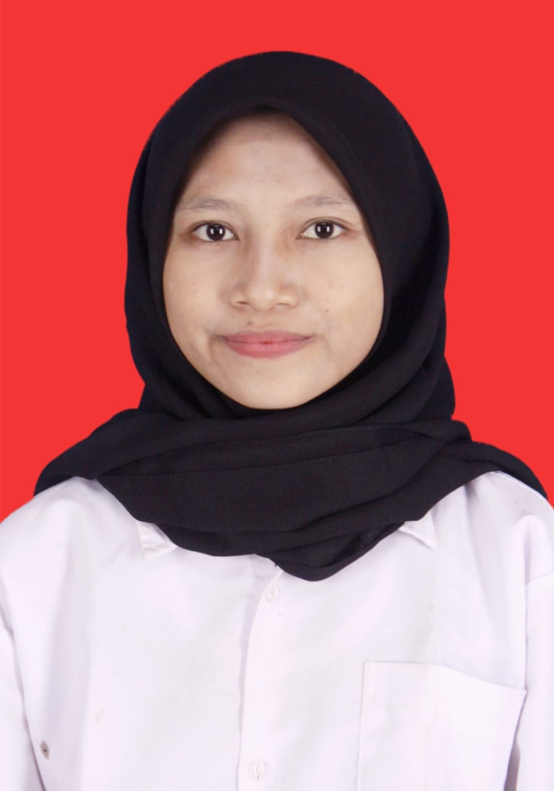

Halo, saya Yuningsih, mahasiswa udinus prodi ilmu komunikasi,Alumni Smk Texmaco Semarang jurusan Teknik Komputer dan Jaringan. Saya minat di bidang media kreatif seperti editing foto dan vidio.
Halo, saya Yuningsih, mahasiswa udinus prodi ilmu komunikasi,Alumni Smk Texmaco Semarang jurusan Teknik Komputer dan Jaringan. Saya minat di bidang media kreatif seperti editing foto dan vidio.
Membuat website bisnis untuk tugas akhir kelas 12 menggunakan wordpress .
Lihat ProjectSilakan isi form berikut untuk menghubungi saya:
Atau hubungi saya via email: yyuningsih654@gmail.com